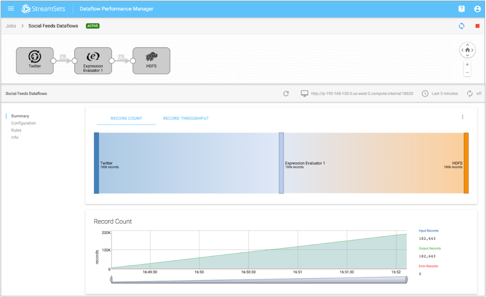

Pipeline Statistics
A DPM job defines the pipeline to run and the Data Collectors that run the pipeline. When you start a job, DPM remotely runs the pipeline on the group of Data Collectors. To monitor the job statistics and metrics within DPM, you must configure the pipeline to write statistics to DPM or to another system.
When a job runs on a single Data Collector, you can simply configure the pipeline to write the statistics directly to DPM. By default, pipelines are configured to write statistics directly to DPM.
When a job runs on multiple Data Collectors, a remote pipeline instance runs on each of the Data Collectors. To view aggregated statistics for the job within DPM, you must configure the pipeline to write the statistics to one of the following systems:
- SDC RPC
- Kafka cluster
- Amazon Kinesis Streams
When you start a job that includes a pipeline configured to write to Kafka, Kinesis, or SDC RPC, DPM automatically generates and runs a system pipeline for the job. The system pipeline reads the statistics written by each running pipeline instance to Kafka, Kinesis, or SDC RPC. Then, the system pipeline aggregates and sends the statistics to DPM.
When a DPM job includes a pipeline that is configured to write statistics, you can view the statistics and metrics when you monitor the job in DPM:

When a DPM job includes a pipeline that is configured to discard statistics, DPM cannot display statistics and metrics for the job. Instead, DPM displays the following warning message when you monitor the job:
Aggregated metrics for the job are not available as individual pipeline metrics are discarded.
Write Statistics Directly to DPM
When you write statistics directly to DPM, DPM does not generate a system pipeline for the job. Instead, the Data Collector directly sends the statistics to DPM.
Write statistics directly to DPM when the job runs on a single Data Collector. If the job runs on multiple Data Collectors, DPM can display the pipeline statistics for each individual Data Collector. However, DPM cannot display an aggregated view of the statistics across all running pipeline instances.
Write Statistics to SDC RPC
When you write statistics to SDC RPC, Data Collector effectively adds an SDC RPC destination to the pipeline that you are configuring. DPM automatically generates and runs a system pipeline for the job. The system pipeline is a pipeline with a Dev SDC RPC with Buffering origin that reads the statistics passed from the SDC RPC destination, and then aggregates and sends the statistics to DPM.
Write statistics to SDC RPC when the job runs on multiple Data Collectors.
- SDC RPC connection - The host and port number of the Data
Collector machine where DPM starts the system pipeline. The host must be a Data
Collector machine registered with DPM that can run a pipeline for the job. A Data
Collector can run the pipeline when it has all labels associated with the job.
For example, if you associate the job with the WestCoast label, then the host specified in the RPC connection must be a machine with a registered Data Collector that also has the WestCoast label.
- SDC RPC ID - A user-defined identifier that allows SDC RPC stages to recognize each other. To avoid mixing statistics from different jobs, use a unique ID for each job.
You can optionally enable encryption to pass data securely and define retry and timeout properties.
For more information about SDC RPC pipelines, see SDC RPC Pipeline Overview.
Best Practices for SDC RPC
- To avoid mixing statistics from different jobs, use a unique SDC RPC ID for each job.
- Monitor the disk space where the Dev SDC RPC with Buffering origin in the system
pipeline temporarily buffers the records to disk before passing the records to
the next stage in the pipeline.
The Dev SDC RPC with Buffering origin in the system pipeline temporarily buffers the statistics to a queue on disk. If the system pipeline slows, the temporary location on disk might become full. The temporary statistics are written to the location specified in the java.io.tmpdir system property, to a file with the following name:
sdc-fragments<file ID>.queueFile
Write Statistics to Kafka
When you write statistics to a Kafka cluster, Data Collector effectively adds a Kafka Producer destination to the pipeline that you are configuring. DPM automatically generates and runs a system pipeline for the job. The system pipeline reads the statistics from Kafka, and then aggregates and sends the statistics to DPM.
Write statistics to a Kafka cluster when the job runs on multiple Data Collectors.
When you write statistics to a Kafka cluster, you define connection information and the topic to write to.
You also configure the partition strategy. The pipeline passes data to partitions in the Kafka topic based on the partition strategy that you choose. You can add additional Kafka configuration properties as needed.
Partition Strategy
The partition strategy determines how to write statistics to Kafka partitions. You can use a partition strategy to balance the work load or to write data semantically.
The pipeline can use one of the following partition strategies:
- Round-Robin
- Writes statistics to a different partition using a cyclical order. Use for load balancing.
- Random
- Writes statistics to a different partition using a random order. Use for load balancing.
- Expression
- Writes statistics to a partition based on the results of the partition expression. Use to perform semantic partitioning.
- When you configure the partition expression, define the expression to evaluate to the partition where you want statistics written.
- Default
- Writes statistics using the default partition strategy that Kafka provides.
Best Practices for a Kafka Cluster
Consider the following best practices when you configure a pipeline to write statistics to a Kafka cluster:
- To avoid mixing statistics from different jobs, use a unique topic name for each job.
- Consider the Kafka retention policy.
Each running pipeline instance writes statistics to Kafka, and then the system pipeline consumes the statistics from Kafka. If the system pipeline unexpectedly shuts down, Kafka retains the statistics for the amount of time determined by the Kafka retention policy. If the system pipeline is down for longer than Kafka retains data, the statistics are lost.
Write Statistics to Kinesis Streams
When you write statistics to Amazon Kinesis Streams, Data Collector effectively adds a Kinesis Producer destination to the pipeline that you are configuring. DPM automatically generates and runs a system pipeline for the job. The system pipeline reads the statistics from Kinesis Streams, and then aggregates and sends the statistics to DPM.
Write statistics to Kinesis Streams when the job runs on multiple Data Collectors.
When you write statistics to Kinesis Streams, you define connection information and the stream to write to.
You also configure the partition strategy. The pipeline passes data to partitions in Kinesis shards based on the partition strategy that you choose. You can add additional Kinesis configuration properties as needed.
AWS Credentials
When the pipeline writes aggregated statistics to Amazon Kinesis Streams, it must pass credentials to Amazon Web Services.
Use one of the following methods to pass AWS credentials:
- IAM roles
- When Data Collector runs on an Amazon EC2 instance, you can use the AWS Management Console to configure an IAM role for the EC2 instance. Data Collector uses the IAM instance profile credentials to automatically connect to AWS.
- When you use IAM roles, you do not need to specify the Access Key ID and Secret Access Key properties when you configure statistics for the pipeline.
- For more information about assigning an IAM role to an EC2 instance, see the Amazon EC2 documentation.
- AWS access key pairs
-
When Data Collector does not run on an Amazon EC2 instance or when the EC2 instance doesn’t have an IAM role, you must specify the Access Key ID and Secret Access Key properties when you configure statistics for the pipeline.
Best Practices for Kinesis Streams
Consider the following best practices when you configure a pipeline to write statistics to Amazon Kinesis Streams:
- To avoid mixing statistics from different jobs, use a unique stream name for each job.
- Consider the Kinesis Streams retention policy.
Each running pipeline instance writes statistics to Kinesis Streams, and then the system pipeline reads the statistics from Kinesis Streams. If the system pipeline unexpectedly shuts down, Kinesis Streams retains the statistics for the amount of time determined by the Kinesis Streams retention policy. If the system pipeline is down for longer than Kinesis Streams retains data, the statistics are lost.
Configuring a Pipeline to Write Statistics
You can configure a pipeline to write statistics after the Data Collector has been registered with DPM.
-
To write statistics to Kafka, on the Stats Aggregator - Write to
Kafka tab, configure the following properties:
Kafka Properties Description Broker URI Connection string for the Kafka broker. Use the following format: <host>:<port>. To ensure a connection, enter a comma-separated list of additional broker URI.
Runtime Topic Resolution Do not use at this time. Topic Topic to use. To avoid mixing statistics from different jobs, use a unique topic name for each job. You cannot define an expression that evaluates to the topic name.
Partition Strategy 
Strategy to use to write to partitions: - Round Robin - Takes turns writing to different partitions.
- Random - Writes to partitions randomly.
- Expression - Uses an expression to write data to different partitions. Writes records to the partitions specified by the results of the expression.
- Default - Uses an expression to extract a partition key from the record. Writes records to partitions based on a hash of the partition key.
Partition Expression Expression to use when using the expression partition strategy. Define the expression to evaluate to the partition where you want statistics written. Partition numbers start with 0.
Optionally, click Ctrl + Space Bar for help with creating the expression.
Kafka Configuration Additional Kafka properties to use. Using simple or bulk edit mode, click the Add icon and define the Kafka property name and value. Use the property names and values as expected by Kafka. Do not use the broker.list property.
ZooKeeper URI Connection string for the ZooKeeper of the Kafka cluster. Use the following format: <host>:<port>. To use a ZooKeeper quorum, enter a comma-separated list.
To use a ZooKeeper chroot path, add the path at the end of the list as follows:<host>:<port>, <host2>:<port2>, .../<chroot_path>
-
To write statistics to Amazon Kinesis Streams, on the Stats
Aggregator - Write to Kinesis tab, configure the following
properties:
Kinesis Properties Description Access Key ID 
AWS access key ID.
Required when not using IAM roles with IAM instance profile credentials.
Secret Access Key
AWS secret access key.
Required when not using IAM roles with IAM instance profile credentials.
Region Amazon Web Services region that hosts the Kinesis cluster. Endpoint Endpoint to connect to when you select Other for the region. Enter the endpoint name. Stream Name Kinesis stream name. To avoid mixing statistics from different jobs, use a unique stream name for each job. You cannot define an expression that evaluates to the stream name.
Partitioning Strategy Strategy to write data to Kinesis shards: - Random - Generates a random partition key.
-
Expression - Uses the result of an expression as the partition key.
Partition Expression Expression to generate the partition key used to pass data to different shards. Use for the expression partition strategy.
Kinesis Producer Configuration Additional Kinesis properties. When you add a configuration property, enter the exact property name and the value. The pipeline does not validate the property names or values.